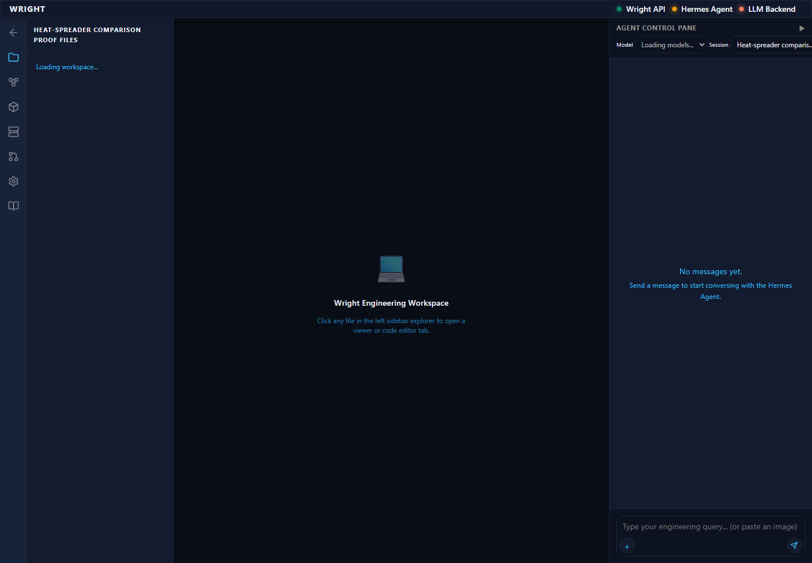
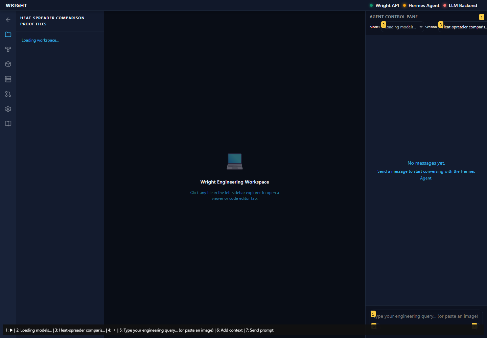
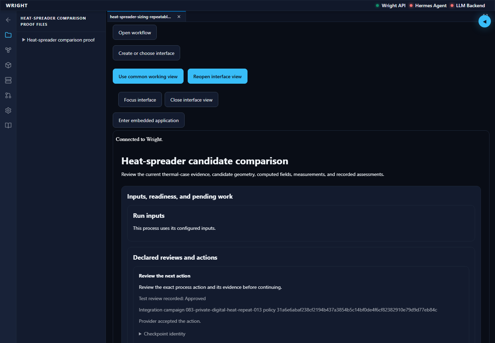
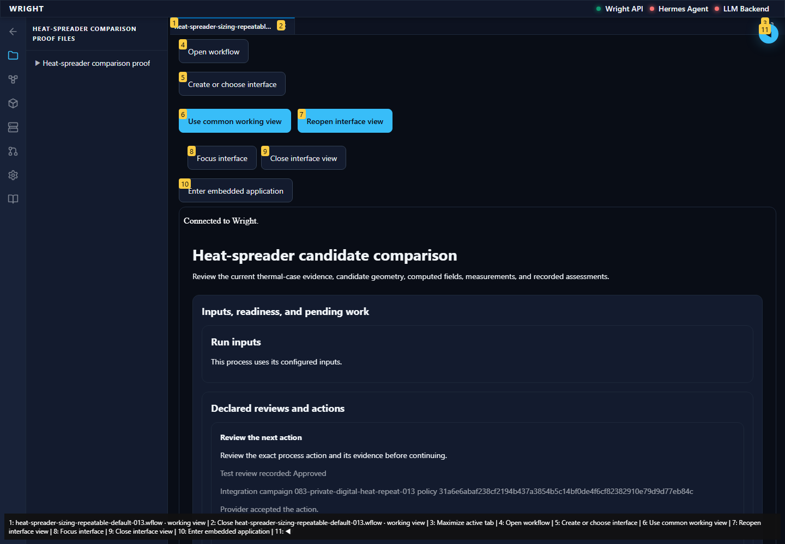
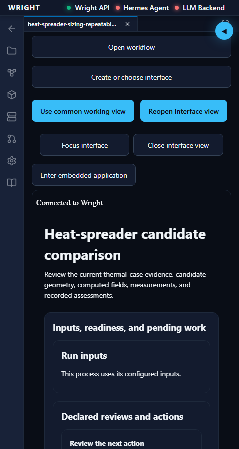
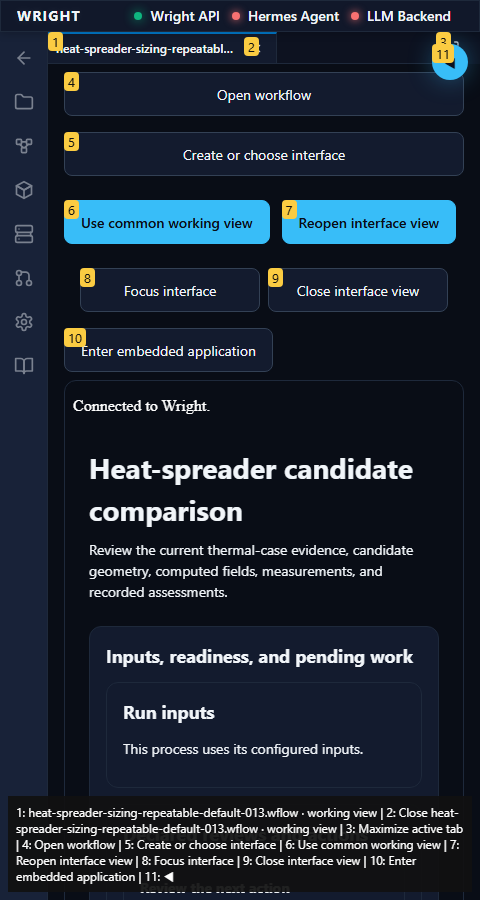
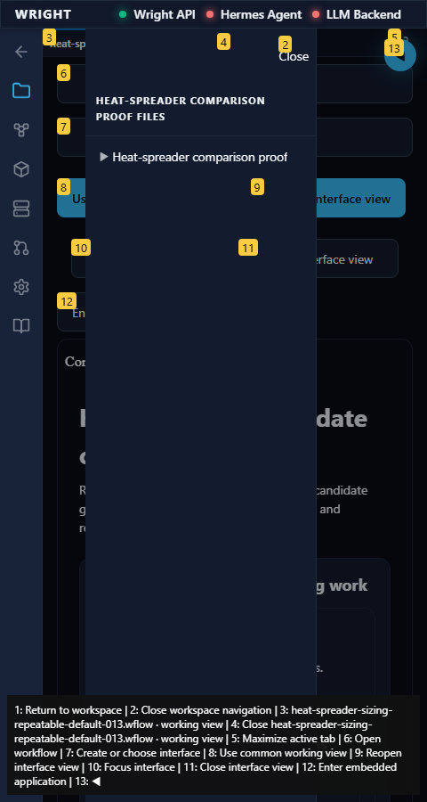
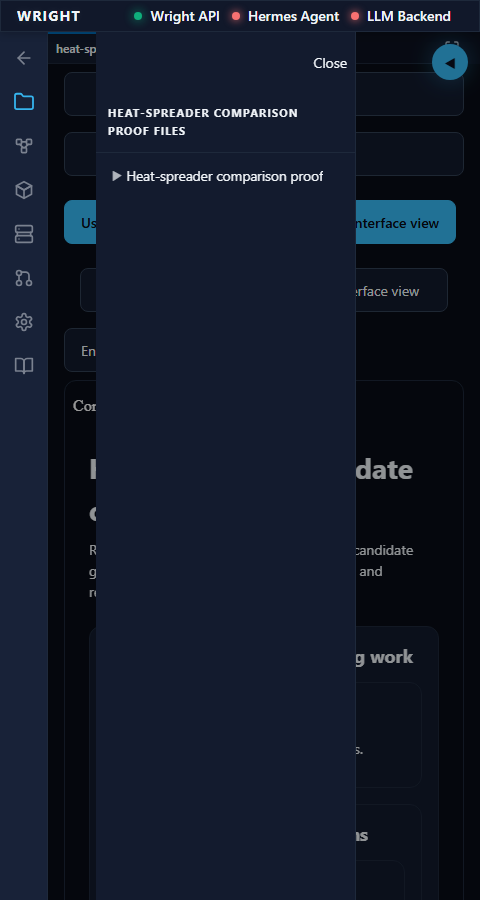

<!doctype html><html><head><meta charset="utf-8"><title>Compact heat working interface and workspace navigation</title><style>body{font:16px system-ui;max-width:1100px;margin:24px auto;background:#101922;color:#e8f4f7}section{padding:18px;border:1px solid #647486;margin:16px 0}.pass{border-color:#64bda4}.blocked{border-color:#ee7373}img{max-width:100%}a{color:#7fe0cb}</style></head><body><h1>Compact heat working interface and workspace navigation</h1><p>Normal Wright workspace and actual isolated engineering run. No mocked routes or physical action.</p><p>Status: blocked</p><h2>Manual steps</h2><ol><li>Open the saved working-interface link for the proof run.</li><li>At desktop width, open Workspace Files.</li><li>Resize to480px. Open Files, then close with Escape, Close or Return to workspace.</li><li>Resize back to1440px and check the file panel returns.</li><li>At compact width click Open workflow and inspect Diagram and Source.</li></ol><section class="pass"><h2>Updated installed workspace · pass</h2><p>The updated package opens through the normal workspace.</p><p>Expected: Existing workspace navigation visible.</p><p>Actual: Normal Workflows and Files controls are available.</p><p>raw<a class="image-button" href="screenshots/raw/S01.png" onclick="event.preventDefault();document.getElementById('full-image').src=this.href;document.getElementById('image-dialog').showModal()"></a></p><p>annotated<a class="image-button" href="screenshots/annotated/S01.png" onclick="event.preventDefault();document.getElementById('full-image').src=this.href;document.getElementById('image-dialog').showModal()"></a></p></section><section class="pass"><h2>Saved engineering interface and desktop navigation · pass</h2><p>The same exact results render with the desktop file panel open.</p><p>Expected: Exact recorded results and docked navigation.</p><p>Actual: 18 exact result identities; docked file panel 260px wide.</p><p>raw<a class="image-button" href="screenshots/raw/S02.png" onclick="event.preventDefault();document.getElementById('full-image').src=this.href;document.getElementById('image-dialog').showModal()"></a></p><p>annotated<a class="image-button" href="screenshots/annotated/S02.png" onclick="event.preventDefault();document.getElementById('full-image').src=this.href;document.getElementById('image-dialog').showModal()"></a></p></section><section class="pass"><h2>Compact content gets the workspace width · pass</h2><p>The file panel no longer consumes the compact document width.</p><p>Expected: Navigation closed; document wider than420px; same live frame/results.</p><p>Actual: Document 432px; embedded body 382px with 533px scroll width and visible horizontal overflow; same iframe and results.</p><p>raw<a class="image-button" href="screenshots/raw/S03.png" onclick="event.preventDefault();document.getElementById('full-image').src=this.href;document.getElementById('image-dialog').showModal()"></a></p><p>annotated<a class="image-button" href="screenshots/annotated/S03.png" onclick="event.preventDefault();document.getElementById('full-image').src=this.href;document.getElementById('image-dialog').showModal()"></a></p></section><section class="pass"><h2>Files remains accessible as compact navigation · pass</h2><p>Files opens over the working view without resizing or restarting it.</p><p>Expected: Focused close control and overlay navigation; document width unchanged.</p><p>Actual: Compact overlay opens; Close is focused; the same iframe keeps its available width.</p><p>raw<a class="image-button" href="screenshots/raw/S04.png" onclick="event.preventDefault();document.getElementById('full-image').src=this.href;document.getElementById('image-dialog').showModal()"></a></p><p>annotated<a class="image-button" href="screenshots/annotated/S04.png" onclick="event.preventDefault();document.getElementById('full-image').src=this.href;document.getElementById('image-dialog').showModal()"></a></p></section><section class="blocked"><h2>Entry stopped · blocked</h2><p>The normal workspace entry did not meet the expected state.</p><p>Expected: Workspace and established editor available.</p><p>Actual: locator.click: Timeout 30000ms exceeded.
Call log:
  - waiting for getByRole(&#39;button&#39;, { name: &#39;Return to workspace&#39;, exact: true })
    - locator resolved to &lt;button type=&quot;button&quot; aria-label=&quot;Return to workspace&quot; data-testid=&quot;workspace-sidebar-backdrop&quot;&gt;&lt;/button&gt;
  - attempting click action
    2 × waiting for element to be visible, enabled and stable
      - element is visible, enabled and stable
      - scrolling into view if needed
      - done scrolling
      - &lt;div&gt;…&lt;/div&gt; from &lt;div role=&quot;region&quot; id=&quot;workspace-navigation-panel&quot; data-testid=&quot;workspace-sidebar&quot; aria-label=&quot;Workspace navigation&quot;&gt;…&lt;/div&gt; subtree intercepts pointer events
    - retrying click action
    - waiting 20ms
    2 × waiting for element to be visible, enabled and stable
      - element is visible, enabled and stable
      - scrolling into view if needed
      - done scrolling
      - &lt;div&gt;…&lt;/div&gt; from &lt;div role=&quot;region&quot; id=&quot;workspace-navigation-panel&quot; data-testid=&quot;workspace-sidebar&quot; aria-label=&quot;Workspace navigation&quot;&gt;…&lt;/div&gt; subtree intercepts pointer events
    - retrying click action
      - waiting 100ms
    55 × waiting for element to be visible, enabled and stable
       - element is visible, enabled and stable
       - scrolling into view if needed
       - done scrolling
       - &lt;div&gt;…&lt;/div&gt; from &lt;div role=&quot;region&quot; id=&quot;workspace-navigation-panel&quot; data-testid=&quot;workspace-sidebar&quot; aria-label=&quot;Workspace navigation&quot;&gt;…&lt;/div&gt; subtree intercepts pointer events
     - retrying click action
       - waiting 500ms
</p><p>raw<a class="image-button" href="screenshots/raw/STOP.png" onclick="event.preventDefault();document.getElementById('full-image').src=this.href;document.getElementById('image-dialog').showModal()"></a></p><p>annotated<a class="image-button" href="screenshots/annotated/STOP.png" onclick="event.preventDefault();document.getElementById('full-image').src=this.href;document.getElementById('image-dialog').showModal()"></a></p></section><dialog id="image-dialog"><button onclick="document.getElementById('image-dialog').close()">Close</button></dialog></body></html>